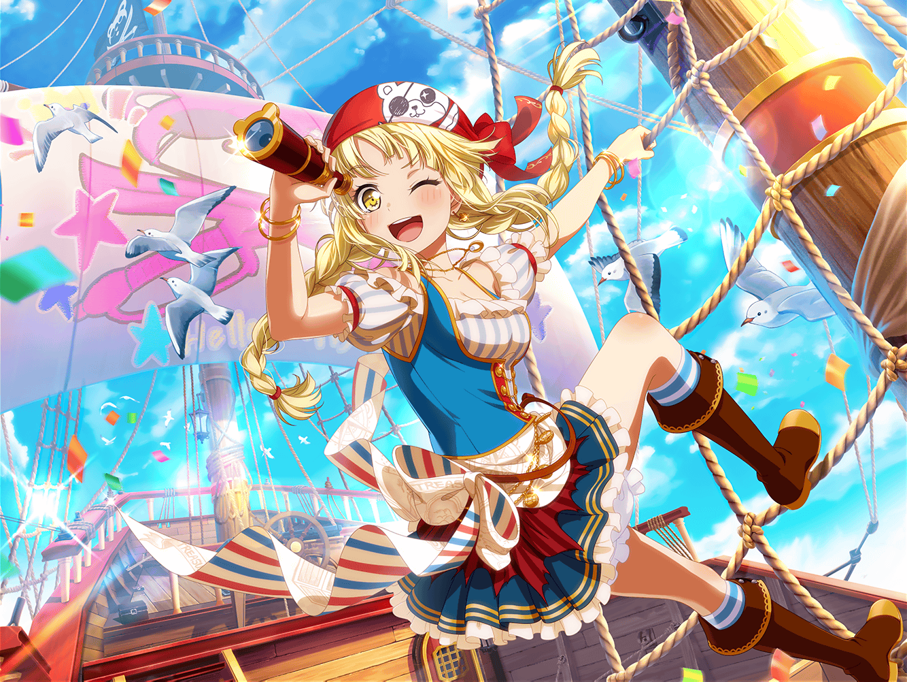

川沿いの道
こころ
あら、まりなと{{userName}}じゃない！
まりな
こんにちは、こころちゃん！
これからどこかに出かけるところ？
こころ
ええ、そうなの！
今日はハロハピのみんなと一緒に博物館へ行くのよ！
まりな
へえ、博物館かぁ。
何か特別な展示をやってるとか？
こころ
ええ、恐竜展をやってるの！
どんな恐竜さんに会えるか、とっても楽しみだわ！
まりな
それは楽しそうだね。
……って、恐竜といえば、こころちゃん達、
化石を発見したってニュースになってなかった！？
こころ
あら、まりなも知ってるのね。そうなの。
それがきっかけで、恐竜さんのことがもっと知りたくなったのよ
まりな
な、なるほどね……
でも、どうして化石なんて見つけられたの？
こころ
化石の場所が宝の地図に描いてあったのよ！
まりな
え？ 宝の地図……？
えーと、どういうこと？
こころ
それじゃ詳しく説明するわね！
まりな
ぼ……冒険……
現実離れしててピンとこないけど、
休みの日にすごいことしてるんだね……
こころ
冒険って、とーっても楽しいの！
まりな達はしたことある？
まりな
な、ないかな……
こころ
{{userName}}もないの？
それなら冒険に出かけたほうがいいわ！
こころ
冒険すると世界には自分が知らない
ステキなものがあるってわかるのよ！
こころ
出会ったことのない景色や生き物……
それに、美味しい食べ物なんか見つかるかもしれないわ！
まりな
自分が知らない素敵なものかぁ……
たしかにそういうものに出会えたら感動するよね
まりな
なんだか、そういう話を聞いちゃうと、
私も行ったことのないところに行ってみたくなるなぁ
こころ
きっと楽しい冒険になると思うわ！
新しい何かを探すのってとってもわくわくするもの！
こころ
あたしももっともーっといろいろな場所を冒険したいわ！
まりな
こころちゃんは行ってみたい場所ってあるの？
こころ
そうね、南極はまだ行ったことないから行ってみたいわ！
ペンギンさんと一緒に雪合戦をしたら楽しいと思わない？
こころ
それと、海の底もまだ行ったことがないわね！
どんな世界かわからないけどステキなものが待ってる気がするの！
こころ
それから、あとは……
まりな
ふふ、行ってみたい場所、たくさんあるみたいだね
こころ
世界にはまだまだ知らない場所がたくさんあるもの。
ハロハピのみんなと一緒に、楽しいことたくさんしたいわ！
こころ
あなた達も行きたくなったら一緒に行きましょっ！
冒険の仲間は大歓迎よ！